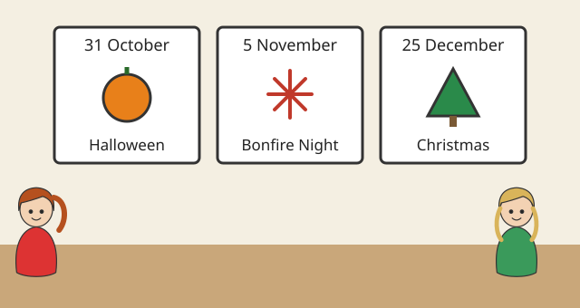

Feste in Großbritannien
Mit einem KI-Tutor lernen
Ein KI-Tutor erklärt dir diese Seite und hilft dir bei den Aufgaben. Wähl deinen Assistenten:
Mit Claude öffnen Mit ChatGPT öffnen Mit Mistral Vibe öffnen
Du nutzt dein eigenes Konto beim Anbieter. Der Assistent ist kein Angebot von lernapps.net: lernapps liefert nur Inhalte und Aufgaben. Die Wahl gilt für alle Seiten, nur auf diesem Gerät.
Ellie erzählt von drei Festen
Es ist Herbst in Millbrook. Ellie zeigt Sophie im Kalender drei Karten mit Festen. Sophie kennt Weihnachten, aber nicht die anderen beiden.

Ellie (links) und Sophie (rechts) vor den drei Karten für Herbst und Winter.
Quelle: eigene Zeichnung. Lizenz: CC-BY-4.0.Das kannst du danach: Halloween, Bonfire Night und Christmas mit dem Datum auf Englisch nennen und in den Jahreslauf einordnen.
Aufgabe
Lösung
Halloween richtige Antwort
Halloween ist am 31. Oktober, am Abend vor dem Feiertag All Hallows' Day.
Bonfire Night
Bonfire Night ist am 5. November.
Christmas
Christmas ist am 25. Dezember.
Halloween feiert man am 31. Oktober, am Abend vor dem Feiertag All Hallows' Day.
Die Feste im Kalender
| Datum | Fest |
|---|---|
| 31 October | Halloween |
| 5 November | Bonfire Night |
| 25 December | Christmas |
An Halloween ist alles gruselig (scary). An Bonfire Night gibt es ein Lagerfeuer (bonfire) und Feuerwerk (fireworks). Der Tag erinnert an eine Geschichte aus dem Jahr 1605. An Christmas gibt es Geschenke (presents).
| Ausdruck | Bedeutung |
|---|---|
| Halloween is on the thirty-first of October. | Halloween ist am 31. Oktober. |
| Bonfire Night is on the fifth of November. | Bonfire Night ist am 5. November. |
| Christmas is on the twenty-fifth of December. | Weihnachten ist am 25. Dezember. |
Merke
Namen von Festen schreibst du im Englischen groß: Halloween, Bonfire Night, Christmas. Das Datum sagst du mit der Ordnungszahl, wie auf der Seite zum Datum: the fifth of November.
Übung
Aufgabe
Lösung
Richtige Antwort: Halloween – 31 October; Bonfire Night – 5 November; Christmas – 25 December
Halloween ist am 31. Oktober, Bonfire Night am 5. November und Christmas am 25. Dezember.
Aufgabe
Lösung
Richtige Antwort: 1. Halloween, 2. Bonfire Night, 3. Christmas
Zuerst kommt Halloween am 31. Oktober, dann Bonfire Night am 5. November, zuletzt Christmas am 25. Dezember.
Aufgabe
Wähle das passende Wort.
- An Bonfire Night gibt es Feuerwerk. → On Bonfire Night we have ….
- An Christmas gibt es Geschenke. → At Christmas we have ….
Lösung
- On Bonfire Night we have fireworks.
- At Christmas we have presents.
Aufgabe
Hör zu und schreibe, was Ellie sagt.
- KI
- KI
- KI
Lösung
- Halloween is on the thirty-first of October. (auch richtig: Halloween is on October the thirty-first.)
- Bonfire Night is on the fifth of November. (auch richtig: Bonfire Night is on November the fifth.)
- Christmas is on the twenty-fifth of December. (auch richtig: Christmas is on December the twenty-fifth.)
Aufgabe
Was sagt Sophie auf Englisch? Schreibe den ganzen Satz.
- Halloween ist am 31. Oktober.
- Bonfire Night ist am 5. November.
- Weihnachten ist am 25. Dezember.
Lösung
- Halloween is on the thirty-first of October. (auch richtig: Halloween is on October the thirty-first.)
- Bonfire Night is on the fifth of November. (auch richtig: Bonfire Night is on November the fifth.)
- Christmas is on the twenty-fifth of December. (auch richtig: Christmas is on December the twenty-fifth.)
Aufgabe
Lösung
Richtige Antwort: Die Aussage stimmt nicht.
Bonfire Night ist am 5. November, nicht im Juli.
Selbst sagen und schreiben
Aufgabe
Hör zu, sprich nach und nimm dich auf. Vergleiche dann mit dem Original.
Tipp
Hör das Beispiel zuerst. Sprich dann langsam nach und vergleiche deine Aufnahme mit dem Original.
- Halloween is on the thirty-first of October.KI
- Bonfire Night is on the fifth of November.KI
- Christmas is on the twenty-fifth of December.KI
Zum Aufnehmen braucht diese Aufgabe JavaScript. Die Beispiele kannst du auch ohne anhören.
Lösung
- Halloween is on the thirty-first of October.
- Bonfire Night is on the fifth of November.
- Christmas is on the twenty-fifth of December.
Offene Aufgabe
Sophie schreibt Amir von einem Fest in Großbritannien. Schreibe zwei kurze englische Sätze mit dem Namen und dem Datum eines Festes.
Eine gute Antwort enthält:
Lösung
Bonfire Night is on the fifth of November. We have fireworks.
Wie es weitergeht
Im Kalender stehen jetzt Geburtstage, Stundenplan und Feste. Sophie schreibt eine Nachricht nach Hause und vergleicht. Auf der nächsten Seite lernst du, wie die Schule in Großbritannien aussieht.
Fehler gefunden oder eine Idee für diese App?